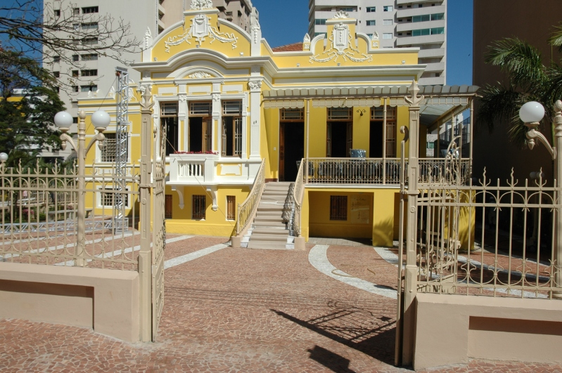
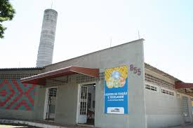
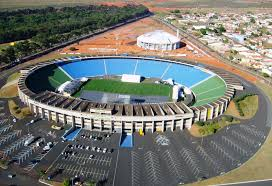
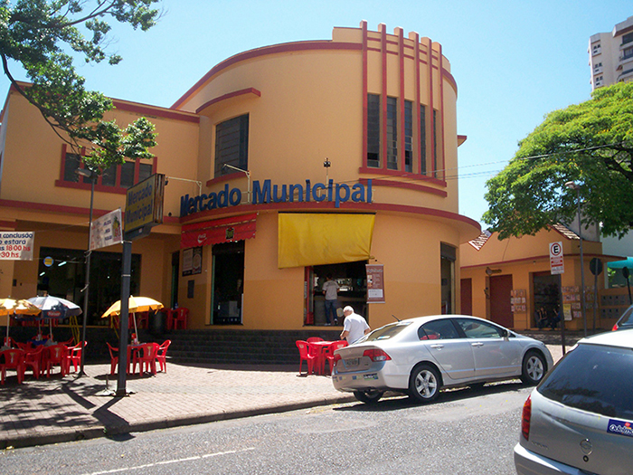
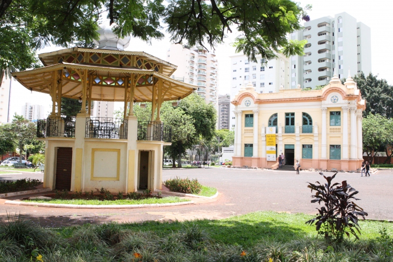
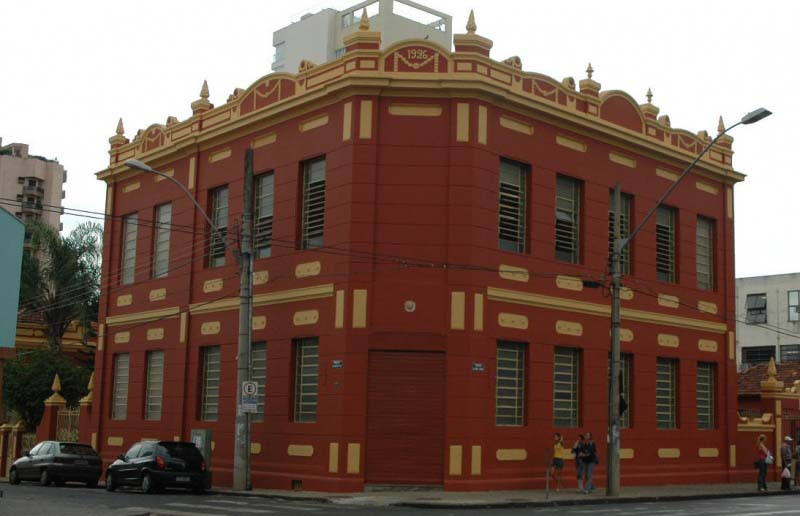
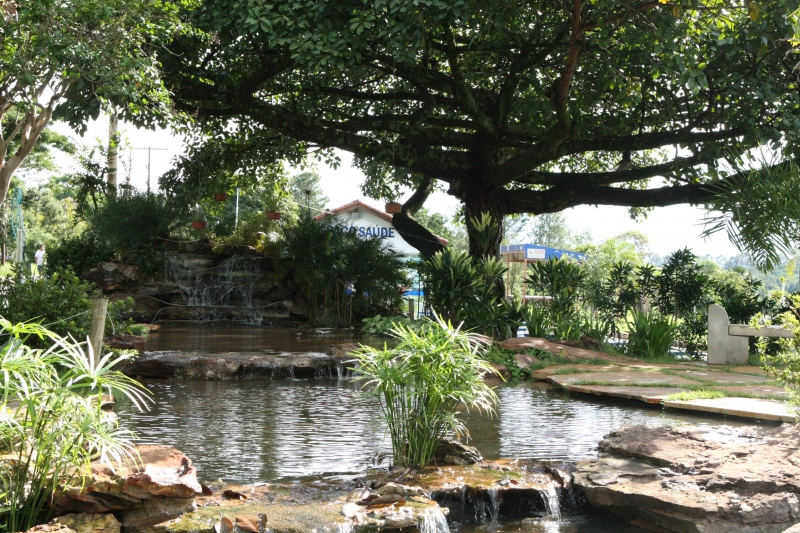
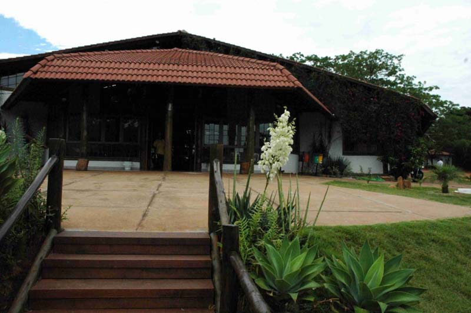
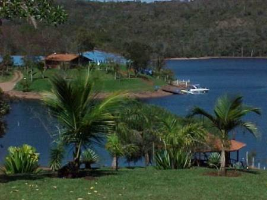

Gire a tela para melhor visualização!
|  | Casa da Cultura O atual edifício da Casa da Cultura foi construído entre 1922 e 1924, com o objetivo de se tornar residência do Sr. Eduardo Marquez, intendente municipal (de 1923 a 1926), que queria construir uma suntuosa casa, com características monumentais, semelhante a algumas, vistas por ele, em São Paulo. |
|  | Centro de Fiação e Tecelagem O Centro de Fiação e Tecelagem é mantido pela Fundação Cultural e Assistencial Filadélfia, entidade civil, sem fins lucrativos, criada com a finalidade de apoiar e promover a arte milenar de fiar e tecer manualmente, tapetes, almofadas, colchas, mantas, xales, painéis e outros. |
|  | Estádio João Havelange |
|  | Mercado Municipal O decreto autorizando a construção do Mercado Municipal é de 1923, mas só foi executado em 1944 no mandato do prefeito Vasconcelos Costa, com arquitetura moderna para a época. |
|  | Museu Municipal de Uberlândia O Museu Municipal dispõe de um acervo de 1.500 peças e caracteriza-se pelo caráter histórico e antropológico. As exposições retratam o cotidiano de nossos antepassados. O espaço está situado à Praça Clarimundo Carneiro, 39. O telefone de contato é (34) 3214-0068. |
|  | Oficina Cultural O conjunto de construções onde se encontra localizada a Oficina Cultural data do início do século 20 e tem suas origens históricas ligadas à energia elétrica em Uberlândia. As linhas arquitetônicas são em estilo eclético, com linhas neoclássicas. Em 1929, a Companhia Prada de Eletricidade comprou o prédio localizado na esquina da Avenida João Pinheiro e Rua Tiradentes, um imóvel de dois pavimentos da Companhia de Força e Luz. |
|  | Parque do Sabiá Com uma área de 1.850.000 m², o Parque do Sabiá possui dentre seus atrativos um zoológico, setor de piscicultura, aquário e pista para caminhada e cooper. Além disso, ele possui um parque infantil, oito campos de futebol, duas piscinas, sete lagos e um bosque natural de 200 mil m². O local é aberto de 3ª à Domingo das 7 às 17h30. |
|  | Parque Victorio Siqueirolli A área constituída por esta unidade de conservação é composta de áreas públicas derivadas de loteamentos aprovados pela Prefeitura Municipal de Uberlândia e áreas privadas que foram doadas pelos seus proprietários ao município de Uberlândia. A maior destas áreas é remanescente de uma antiga fazenda de propriedade do Sr. Victório Siqueirolli, que deu nome ao parque municipal. Também se constitui de uma área de preservação permanente dos córregos Liso e Carvão. |
|  | Reservatório de Miranda A "Represa de Miranda", tem uma extensão de 50 Km2. Suas margens são ocupadas por loteamentos, chácaras e clubes de lazer. Uma das maiores atrações turísticas do reservatório é a Usina de Miranda. Distante cerca de 25 Km do centro da cidade. O acesso para as margens do lago é feito pela Br-365, sentido Uberlândia-Araxá. |